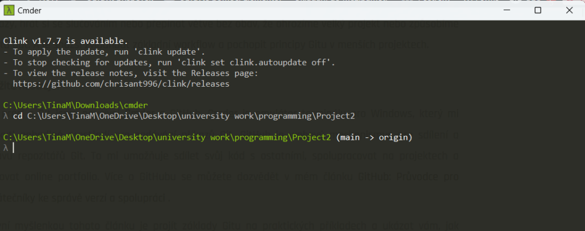

Learning Git Through Small Projects
Mastering version control with C++ and Python experiments.

As part of my personal development, I decided to delve deeper into version control systems and chose the popular Git. For practical application, I selected several simple programming projects to familiarize myself with its core functionalities.
Tools & Environment
I have used Cmder (a terminal emulator for Windows) and GitHub to work with Git. Code versioning is absolutely essential for every programmer. It allows us to track each change, gives the ability to roll back in time if anything goes wrong, and acts as a professional backup.

Basic Git Commands
During these projects, I mastered the fundamental workflow that every developer uses daily:
git init&git clone– Initializing and localizing repositories.git status– Monitoring changes in the working directory.git add&git commit– Staging and saving changes with descriptive messages.git push&git pull– Synchronizing local work with remote GitHub repositories.
Reflection & Challenges
I encountered a challenge with authentication when password-based push was deprecated. I had to switch to Personal Access Tokens (PAT). Another obstacle was managing workflow permissions, which I solved using git update-index --skip-worktree.
Key Challenges Overcome
- Transition to Personal Access Tokens (PAT).
- Resolving permission issues within the Git index.
- Mastering Merge Conflict resolution in C++ files.
Technical Takeaways
- Understanding of distributed version control.
- Maintaining clean and concise commit history.
- Effective use of terminal emulators for automation.
"Regular commits with concise descriptions are key. This experience strengthened my knowledge of resolving permission issues and manipulating the Git index."